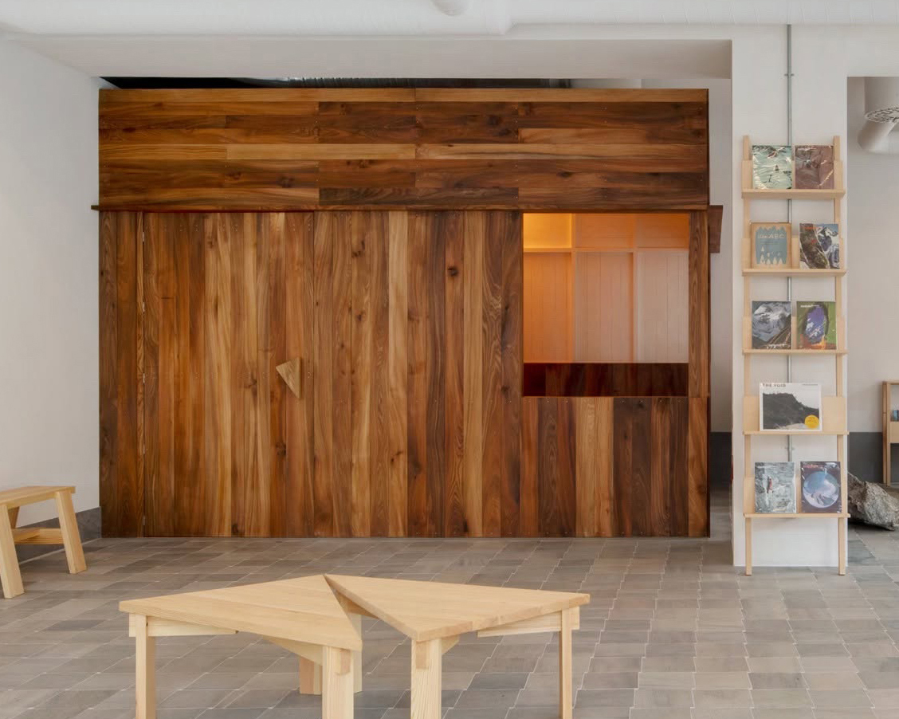

Upload
Logo
Import
Detail
100 × 100
200 × 200
300 × 300
400 × 400 · 5mm
500 × 500 · 4mm
Max colours
Line art
Maps artwork onto the 2×2m grid in the nearest yarns. Keep colours low (2–4) for line art.
Export
Tufted PNG
Flat PNG
Save .json
Load project
Rug
2.0 × 2.0 m
·
5 mm

X
Y
Scale
100%
Reset
Artwork
Tufted
Hitex · SE
Tufting Europe
Tufting Shop · SE
Background
Plain
Checker
with
Size